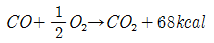
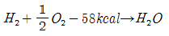
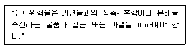
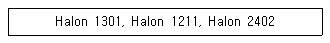
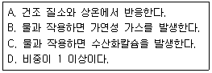

위험물산업기사 (2014-03-02 기출문제)
1과목: 일반화학
1. 다음 중 전자 배치가 다른 것은?
- Ar
- F-
- Na+
- Ne
(정답률: 76%)

2. 물 36g 을 모두 증발시키면 수증기가 차지하는 부피는 표준상태를 기준으로 몇 L 인가?
- 11.2L
- 22.4L
- 33.6L
- 44.8L
(정답률: 72%)
3. CuCl2 의 용액에 5A 전류를 1시간 동안 흐르게 하면 몇 g 의 구리가 석출되는가? (단, Cu 의 원자량은 63.54 이며, 전자 1개의 전하량은 1.602 × 10-19C 이다.)
- 3.17
- 4.83
- 5.93
- 6.35
(정답률: 62%)
4. NaCl의 결정계는 다음 중 무엇에 해당되는가?
- 입방정계(cubic)
- 정방정계(tetragonal)
- 육방정계(hexagonal)
- 단사정계(monoclinic)
(정답률: 78%)
5. 다음 중 반응이 정반응으로 진행되는 것은?
- Pb2+ + Zn → Zn2+ +Pb
- I2 + 2Cl- → 2I- + Cl2
- 2Fe3+ + 3Cu → 3Cu2+ + 2Fe
- Mg2+ + Zn → Zn2+ +Mg
(정답률: 80%)
6. 다음 화합물 중 2mol 이 완전연소될 때 6mol 의 산소가 필요한 것은?
- CH3 - CH3
- CH2 = CH2
- CH = CH
- C6H6
(정답률: 77%)
7. 볼타전지의 기전력은 약 1.3V 인데 전류가 흐리기 시작하면 곧 0.4V로 된다. 이러한 현상을 무엇이라 하는가?
- 감극
- 소극
- 분극
- 충전
(정답률: 80%)
8. 벤젠에 수소 원자 한 개는 -CH3기로, 또 다른 수소원자 한 개는 -OH 기로 치환되었다면 이성질체수는 몇 개 인가?
- 1
- 2
- 3
- 4
(정답률: 78%)
9. 유기화합물을 질량 분석한 결과 C 84%, H 16% 의 결과를 얻었다. 다음 중 이 물질에 해당하는 실험식은?
- C5H
- C2H2
- C7H8
- C7H16
(정답률: 77%)
10. 알칼리 금속이 다른 금속 원소에 비해 반응성이 큰 이유와 밀접한 관련이 있는 것은?
- 밀도가 작기 때문이다.
- 물에 잘 녹기 때문이다.
- 이온화에너지가 작기 때문이다.
- 녹는점과 끓는점이 비교적 낮기 때문이다.
(정답률: 83%)
11. 수성가스(Water gas)의 주성분을 옳게 나타낸 것은?
- CO2, CH4
- CO, H2
- CO2, H2, O2
- H2, H2O
(정답률: 80%)
12. 지시약으로 사용되는 페놀프탈레인 용액은 산성에서 어떤 색을 띠는가?
- 적색
- 청색
- 무색
- 황색
(정답률: 79%)
13. 다음 중 물이 산으로 작용하는 반응은?
- NH4++ H2O → NH3 + H3O+
- HCOOH+ H2O → HCOO-+ H3O+
- CH3COO-+ H2O → CH3COOH + OH-
- HCl+ H2O → H3O++ Cl-
(정답률: 84%)
14. 다음 반응식 중 흡열 반응을 나타내는 것은?

- N2 + O2 → 2NO, △H = + 42kal
- C + O2 → CO2, △H = -94kal

(정답률: 64%)
15. 다음 물질 중 SP3 혼성 궤도 함수와 가장 관계가 있는 것은?
- CH4
- BeCl2
- BF3
- HF
(정답률: 69%)
16. 탄소 3g 이 산소 16g 중에서 완전연소 되었다면, 연소한 후 혼합 기체의 부피는 표준상태에서 몇 L 가 되는가?
- 5.6
- 6.8
- 11.2
- 22.4
(정답률: 53%)
17. 다음 중 전리도가 가장 커지는 경우는?
- 농도와 온도가 일정할 때
- 농도가 진하고 온도가 높을수록
- 농도가 묽고 온도가 높을수록
- 농도가 진하고 온도가 낮을수록
(정답률: 82%)
18. 아세틸렌계열 탄화수소에 해당 되는 것은?
- C5H8
- C6H12
- C6H8
- C3H2
(정답률: 55%)
19. 어떤 용액의 [OH-] = 2×10-5M 이었다. 이 용액의 pH는 얼마인가?
- 11.3
- 10.3
- 9.3
- 8.3
(정답률: 70%)
20. 전극에서 유리되고 화학물질의 무게가 전지를 통하여 사용된 전류의 양에 정비례하고 또한 주어진 전류량에 의하여 생성된 물질의 무게는 그 물질의 당량에 비례한다는 화학법칙은?
- 르 샤틀리에의 법칙
- 아보가드로의 법칙
- 패러데이의 법칙
- 보일-샤를의 법칙
(정답률: 78%)
2과목: 화재예방과 소화방법
21. 위험물안전관리법령상 위험물 제조소와의 안전거리 기준이 50 m 이상이어야 하는 것은?
- 고압가스 취급시설
- 학교 · 병원
- 유형문화재
- 극장
(정답률: 91%)
22. 위험물안전관리법령에 의거하여 개방형스프링클러 헤드를 이용하는 스프링클러설비에 설치하는 수동식 개방밸브를 개방 조작하는데 필요한 힘은 몇 kg 이하가 되도록 설치하여야 하는가?
- 5
- 10
- 15
- 20
(정답률: 66%)
23. 프로판 2m3 이 완전연소할 때 필요한 이론 공기량은 약 몇 m3 인가? (단, 공기 중 산소농도는 21vol% 이다.)
- 23.81
- 35.72
- 47.62
- 71.43
(정답률: 71%)
24. 드라이아이스 1kg 이 완전히 기화하면 약 몇 몰의 이산화탄소가 되겠는가?
- 22.7
- 51.3
- 230.1
- 515.0
(정답률: 78%)
25. 위험물안전관리법령상 포소화설비의 고정포 방출구를 설치한 위험물 탱크에 부속하는 보조포소화전에서 3개의 노즐을 동시에 사용할 경우 각각의 노즐선단에서의 분당 방사량은 몇 L/min 이상이어야 하는가?
- 80
- 130
- 230
- 400
(정답률: 54%)
26. 위험물안전관리법령상 분말소화설비의 기준에서 가압용 또는 축압용 가스로 사용하도록 지정한 것은?
- 헬륨
- 질소
- 일산화탄소
- 아르곤
(정답률: 84%)
27. 위험물제조소 등에 설치하는 이산화탄소소화설비의 기준으로 틀린 것은?
- 저장용기의 충전비는 고압식에 있어서는 1.5 이상 1.9 이하, 저압식에 있어서는 1.1 이상 1.4 이하로 한다.
- 저압식 저장용기에는 2.3MPa 이상 및 1.9MPa 이하의 압력에서 작동하는 압력경보장치를 설치한다.
- 저압식 저장용기에는 용기내부의 온도를 -20℃ 이상, -18℃ 이하로 유지할 수 있는 자동냉동기를 설치한다.
- 기동용 가스용기는 20MPa 이상의 압력에 견딜 수 있는 것이어야 한다.
(정답률: 68%)
28. 다음은 위험물안전관리법령에서 정한 제조소등에서의 위험물의 저장 및 취급에 관한 기준 중 위험물의 유별 저장·취급 공통기준의 일부이다. ( )안에 알맞은 위험물 유별은?

- 제2류
- 제3류
- 제5류
- 제6류
(정답률: 76%)
29. 위험물 제조소에서 화기엄금 및 화기주의를 표시하는 게시판의 바탕색과 문자색을 옳게 연결한 것은?
- 백색바탕 - 청색문자
- 청색바탕 - 백색문자
- 적색바탕 - 백색문자
- 백색바탕 - 적색문자
(정답률: 76%)
30. 가연물의 주된 연소형태에 대한 설명으로 옳지 않은 것은?
- 유황의 연소형태는 증발연소이다.
- 목재의 연소형태는 분해연소이다.
- 에테르의 연소형태는 표면연소이다.
- 숯의 연소형태는 표면연소이다.
(정답률: 73%)
31. 제5류 위험물인 자기반응성 물질에 포함되지 않는 것은?
- CH3NO2
- [C6H7O2(ONO2)3]n
- C6H2CH3(NO2)3
- C6H5NO2
(정답률: 46%)
32. 위험물제조소등에 설치하는 전역방출방식의 이산화탄소 소화설비 분사헤드의 방사 압력은 고압식의 경우 몇 MPa 이상이어야 하는가?
- 1.⑤
- 1.7
- 2.1
- 2.6
(정답률: 64%)
33. 위험물안전관리법령상 물분무소화설비의 제어밸브는 바닥으로부터 어느 위치에 설치하여야 하는가?
- 0.5m 이상, 1.5m 이하
- 0.8m 이상, 1.5m 이하
- 1m 이상, 1.5m 이하
- 1.5m 이상
(정답률: 74%)
34. 다음[보기] 중 상온에서의 상태(기체, 액체, 고체)가 동일한 것을 모두 나열한 것은?

- Halon 1301, Halon 2402
- Halon 1211, Halon 2402
- Halon 1301, Halon 1211
- Halon 1301, Halon 1211, Halon 2402
(정답률: 76%)
35. 다음 물질의 화재 시 내알코올포를 쓰지 못하는 것은?
- 아세트알데히드
- 알킬리튬
- 아세톤
- 에탄올
(정답률: 67%)
36. 특정옥외탱크저장소라 함은 저장 또는 취급하는 액체 위험물의 최대수량이 얼마 이상의 것을 말하는가?
- 50만 리터 이상
- 100만 리터 이상
- 150만 리터 이상
- 200만 리터 이상
(정답률: 70%)
37. 할로겐화합물인 Halon 1301 의 분자식은?
- CH3Br
- CCl4
- CF2Br2
- CF3Br
(정답률: 86%)
38. 분말소화기의 각 종별 소화약제 주성분이 옳게 연결된 것은?
- 제1종 소화분말: KHCO3
- 제2종 소화분말: NaHCO3
- 제3종 소화분말: NH4H2PO4
- 제4종 소화분말: NaHCO3 + (NH2)2CO
(정답률: 82%)
39. 경유의 대규모 화재 발생 시 주수소화가 부적당한 이유에 대한 설명으로 가장 옳은 것은?
- 경유가 연소할 때 물과 반응하여 수소가스를 발생하여 연소를 돕기 때문에
- 주수소화하면 경유의 연소열 때문에 분해하여 산소를 발생하고 연소를 돕기 때문에
- 경유는 물과 반응하여 유독가스를 발생하므로
- 경유는 물보다 가볍고 또 물에 녹지 않기 때문에 화재가 널리 확대되므로
(정답률: 78%)
40. 정전기를 유효하게 제거할 수 있는 설비를 설치하고자 할 때 위험물안전관리법령에서 정한 정전기 제거 방법의 기준으로 옳은 것은?
- 공기 중의 상대습도를 70% 이상으로 하는 방법
- 공기 중의 상대습도를 70% 이하로 하는 방법
- 공기 중의 절대습도를 70% 이상으로 하는 방법
- 공기 중의 절대습도를 70% 이하로 하는 방법
(정답률: 87%)
3과목: 위험물의 성질과 취급
41. 염소산나트륨의 성질에 속하지 않는 것은?
- 환원력이 강하다.
- 무색 결정이다.
- 주수소화가 가능하다.
- 강산과 혼합하면 폭발할 수 있다.
(정답률: 62%)
42. 위험물안전관리법령상 지정수량이 나머지 셋과 다른 하나는?
- 적린
- 황화린
- 유황
- 마그네슘
(정답률: 80%)
43. 다음은 위험물의 성질을 설명한 것이다. 위험물과 그 위험물의 성질을 모두 옳게 연결한 것은?

- K - A, B, C
- Ca3P2 - B, C, D
- Na - A, C, D
- CaC2 - A, B, D
(정답률: 66%)
44. 다음 중 물과 반응할 때 위험성이 가장 큰 것은?
- 과산화나트륨
- 과산화바륨
- 과산화수소
- 과염소산나트륨
(정답률: 71%)
45. 다음 중 C5H5N 에 대한 설명으로 틀린 것은?
- 순수한 것은 무색이고 악취가 나는 액체이다.
- 상온에서 인화의 위험이 있다.
- 물에 녹는다.
- 강한 산성을 나타낸다.
(정답률: 61%)
46. 위험물안전관리법령에 따라 지정수량 10배의 위험물을 운반할 때 혼재가 가능한 것은?
- 제1류 위험물과 제2류 위험물
- 제2류 위험물과 제3류 위험물
- 제3류 위험물과 제5류 위험물
- 제4류 위험물과 제5류 위험물
(정답률: 81%)
47. 위험물안전관리법령상 제6류 위험물에 해당하는 물질로서 햇빛에 의해 갈색의 연기를 내며 분해할 위험이 있으므로 갈색병에 보관해야 하는 것은?
- 질산
- 황산
- 염산
- 과산화수소
(정답률: 83%)
48. 물과 접촉하였을 때 에탄이 발생되는 물질은?
- CaC2
- (C2H5)3Al
- C6H3(NO2)3
- C2H5ONO2
(정답률: 70%)
49. 주유취급소의 고정주유설비는 고정주유설비의 중심선을 기점으로 하여 도로경계선까지 몇 m 이상 떨어져 있어야 하는가?
- 2
- 3
- 4
- 5
(정답률: 67%)
50. 위험물의 저장법으로 옳지 않은 것은?
- 금속 나트륨은 석유 속에 저장한다.
- 황린은 물 속에 저장한다.
- 질화면은 물 또는 알코올에 적셔서 저장한다.
- 알루미늄분은 분진발생 방지를 위해 물에 적셔서 저장한다.
(정답률: 82%)
51. 위험물안전관리법령에 따르면 보냉장치가 없는 이동저장 탱크에 저장하는 아세트알데히드의 온도는 몇 ℃ 이하로 유지하여야 하는가?
- 30
- 40
- 50
- 60
(정답률: 88%)
52. 위험물안전관리법령에 따른 위험물 저장기준으로 틀린 것은?
- 이동탱크저장소에는 설치허가증을 비치하여야 한다.
- 지하저장탱크의 주된 밸브는 위험물을 넣거나 빼낼 때 외에는 폐쇄하여야 한다.
- 아세트알데히드를 저장하는 이동저장탱크에는 탱크 안에 불활성 가스를 봉입하여야 한다.
- 옥외저장탱크 주위에 설치된 방유제의 내부에 물이나 유류가 괴었을 경우에는 즉시 배출하여야 한다.
(정답률: 77%)
53. 위험물안전관리법령에 근거한 위험물 운반 및 수납시 주의사항에 대한 설명 중 틀린 것은?
- 위험물을 수납하는 용기는 위험물이 누출되지 않게 밀봉시켜야 한다.
- 온도 변화가 가스발생 우려가 있는 것은 가스 배출구를 설치한 운반용기에 수납할 수 있다.
- 액체 위험물은 운반용기 내용적의 98% 이하의 수납율로 수납하되 55℃의 온도에서 누설되지 아니하도록 충분한 공간 용적을 유지하도록 하여야 한다.
- 고체 위험물은 운반용기 내용적의 98% 이하의 수납율로 수납하여야 한다.
(정답률: 87%)
54. 위험물안전관리법령상 산화프로필렌을 취급하는 위험물 제조설비의 재질로 사용이 금지된 금속이 아닌 것은?
- 금
- 은
- 동
- 마그네슘
(정답률: 77%)
55. 위험물안전관리법령상 제1류 위험물 중 알칼리금속의 과산화물의 운반용기 외부에 표시하여야 하는 주의사항을 모두 옳게 나타낸 것은?
- “화기엄금”, “충격주의” 및 “가연물접촉주의”
- “화기·충격주의”, “물기엄금” 및 “가연물접촉주의”
- “화기주의” 및 “물기엄금”
- “화기엄금”, 및 “충격주의”
(정답률: 83%)
56. 다음 중 독성이 있고, 제2석유류에 속하는 것은?
- CH3CHO
- C6H6
- C6H5CH = CH2
- C6H5NH2
(정답률: 46%)
57. 제4류 위험물을 저장하는 이동탱크저장소의 탱크 용량이 19000L 일 때 탱크의 칸막이는 최소 몇 개를 설치해야 하는가?
- 2
- 3
- 4
- 5
(정답률: 81%)
58. 아세톤에 관한 설명 중 틀린 것은?
- 무색의 액체로서 특이한 냄새를 가지고 있다.
- 가연성이며 비중은 물 보다 작다.
- 화재 발생시 이산화탄소나 포에 의한 소화가 가능하다.
- 알코올, 에테르에 녹지 않는다.
(정답률: 71%)
59. 위험물안전관리법령에 따른 위험물제조소의 안전거리 기준으로 틀린 것은?
- 주택으로부터 10m 이상
- 학교, 병원, 극장으로부터는 30m 이상
- 유형문화재와 기념물 중 지정문화재로부터는 70m 이상
- 고압가스등을 저장 · 취급하는 시설로부터는 20m 이상
(정답률: 90%)
60. 탄화칼슘과 물이 반응하였을 때 생성되는 가스는?
- C2H2
- C2H4
- C2H6
- CH4
(정답률: 58%)